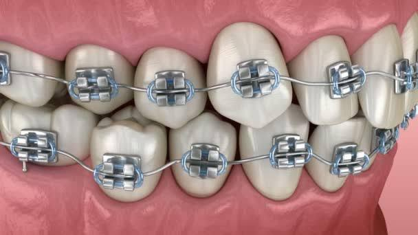
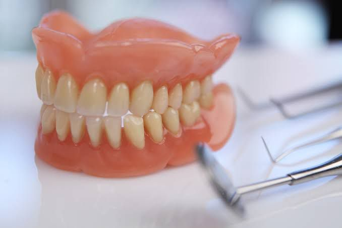
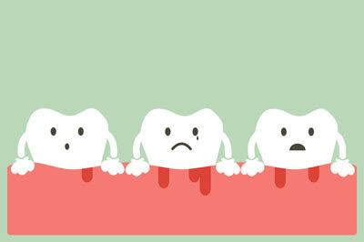
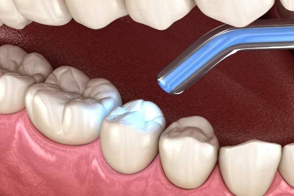

.jpeg)
A filling is used to treat a small hole, or cavity, in a tooth. To repair a cavity, a dentist removes the decayed tooth tissue and then fills the space with a filling material. Dental Filling is a treatment modality to restore missing tooth structure which could have been a result of decay or trauma. Decay makes tooth hollow. Dental Filling helps to fill this gap and protect it from further decay. A filling is also used to repair broken or cracked tooth and the teeth which wear off due to dental habits like teeth grinding, nail biting.
Braces are devices used in orthodontics that align and straighten teeth and help position them with regard to a person's bite, while also aiming to improve dental health. They are often used to correct underbites, as well as malocclusions, overbites, open bites, gaps, deep bites, cross bites, crooked teeth, and various other flaws of the teeth and jaw. Braces can be either cosmetic or structural. Orthodontics has additional benefits over improving cosmetic appearance. The benefits for opting for straightening the teeth
Dental implants are metal posts or frames that are surgically positioned into the jawbone beneath your gums. Once in place, they allow your dentist to mount replacement teeth onto them. An advantage of implants is that no adjacent teeth need to be prepared or ground down to hold your new replacement tooth/teeth in place. A dental implant is a metal post that replaces the root portion of a missing tooth. An artificial tooth is placed on an extension of the post on the dental implant, giving you the look of a real tooth. Artificial tooth roots used to support a restoration for a missing tooth or teeth, helping to stop or prevent jaw bone loss.
A denture is a removable replacement for missing teeth and surrounding tissues. Two types of dentures are available -- complete and partial dentures. Complete dentures are used when all the teeth are missing, while partial dentures are used when some natural teeth remain. Complete dentures can be either "conventional" or "immediate." Made after the teeth have been removed and the gum tissue has begun to heal, a conventional denture is ready for placement in the mouth about eight to 12 weeks after the teeth have been removed.A denture is a removable replacement for missing teeth and surrounding tissues.
 A “Root canal” is not a treatment, but part of a tooth. It is the hollow section of a tooth that contains the nerve tissue, blood vessels, and other cells, also known as the pulp.The procedure often referred to as root canal is called endodontic therapy. Root canal treatment is designed to eliminate bacteria from the infected root canal, prevent reinfection of the tooth and save the natural tooth. When one undergoes a root canal, the inflamed or infected pulp is removed and the inside of the tooth is carefully cleaned and disinfected, then filled and sealed. Getting a root canal is relatively painless and extremely effective. You’ll be back to smiling, biting and chewing with ease in no time.
The cause is usually poor oral hygiene. Periodontitis can lead to tooth loss. It's a risk factor for heart and lung diseases.The procedures involve inserting small pieces of mesh-like material to keep the gum tissue from growing into the areas of bone loss. Also known as scaling and root planing or a deep cleaning, gum therapy treats the area beneath the gumline when signs of gum disease are present. Your initial professional cleaning will include removing all traces of plaque, tartar and bacterial products - a procedure known as scaling and root planing.
Dental crown is a cap, or cover, that dentists put over a tooth. Dental crowns bring the tooth in question back to its normal size, shape, and function.A dental bridge is made with two or more dental crowns on either side of a gap made by a missing tooth, with a false tooth placed in between. Bridges, on the other hand, are solely used to replace missing teeth. They have two crowns one on either end and a bridge of replacement teeth that rest in the area of the gums where there is tooth loss. The crowns at the ends of a bridge can fuse to existing teeth , or your dental professional can attach them to dental implants. Just like with dental crowns, you have a choice of materials available to you for your bridge. Your dental professional is in the best position to advise you in your material choice base on your individual needs.
Tooth colored fillings, also known as white fillings and composite fillings, are comprised of plastic, silica and glass particles. These substances replicate a lot of the qualities of the natural tooth structure like translucency and resistance to wear. The blend of these particles is often referred to as a composite. These fillings are typically used in instances of small to moderate sized restorations. These encompass the majority of fillings. Just about everyone who has a cavity will have the option of enjoying a lovely looking tooth colored filling. It is even possible to have your white fillings placed in a single visit. Tooth colored fillings are incredibly durable. They resist fractures better than other fillings. Go ahead and chew with your white fillings and you won't have any issues at all. So be sure to speak with your dentist about tooth colored fillings to determine if they are the optimal solution for your unique mouth and oral health needs.
